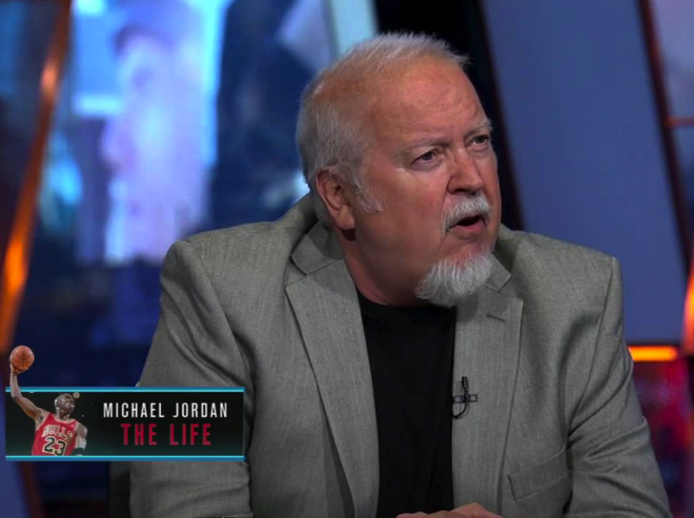

NBA
Howard Beck
Howard's latest appearance: Ep. 54: NBA w/ Viraj Patel, Justin Jones, and Guest Howard Beck (Bleacher Report)
NBA
Dhvanil Zaveri
Dhvanil's latest appearance: Ep. 47: NBA w/ Viraj Patel, Teerth Brahmbhatt, and Justin Jones w/ Guest Dhvanil Zaveri
NBA
Jonathan Abrams
Jonathan's latest appearance: Ep. 43: NBA w/ Viraj Patel and Guest Jonathan Abrams (NBA Journalist and Author, Grantland)
Be sure to pick up a copy of Jonathan's latest basketball book "Boys Among Men: How the Prep-to-Pro Generation Redefined the NBA and Sparked a Basketball Revolution"
NBA
Alan Stein
Coach Stein's latest appearance: Ep. 36: NBA w/ Viraj Patel and Guest Alan Stein (Strength and Conditioning Coach)
Alan Stein is the Director of Performance for Pure Sweat.
NBA
Roland Lazenby
Roland's latest appearance: Ep. 35: NBA w/ Viraj Patel and Guest Roland Lazenby (NBA Author and Biographer)
Be sure to pick up a copy of Roland's New York Times bestselling basketball book "Michael Jordan: The Life"
Politics
Eric M. Garcia
Eric's latest appearance: Ep. 32: Politics and 2016 Presidential Race with Viraj Patel and Guest Eric M. Garcia (Roll Call)
Be sure to read all of Eric's latest political coverage and other related content at Roll Call.
NFL
Daniel Newton
Daniel's latest appearance: Ep. 28: SB 50 and Panthers with Viraj Patel and Guests Logan Ulrich, Daniel Newton, and Rushi Gajjar
NFL
Rushi Gajjar
Rushi's latest appearance: Ep. 28: SB 50 and Panthers with Viraj Patel and Guests Logan Ulrich, Daniel Newton, and Rushi Gajjar
NBA

Satya Polisetti
Satya's latest appearance: Ep. 10: NBA w/ Viraj Patel, Justin Jones, Satya Polisetti, and Teerth Brahmbhatt
NFL
Logan Ulrich
Logan's latest appearance: Ep. 28: SB 50 and Panthers with Viraj Patel and Guests Logan Ulrich, Daniel Newton, and Rushi Gajjar
Be sure to read all of Logan's latest Carolina Tar Heels related content at The Daily Tar Heel.
ENGLISH PREMIER LEAGUE
Jean-Patrick Grillet
Jean-Patrick's latest appearance: Ep. 62: Premier League w/ Viraj Patel, Ryan Dean, and Jean-Patrick Grillet
NFL
Jonathan Jones
Jonathan's latest appearance: Ep. 4: NFL w/ Viraj Patel and Nate Preval w/ Guest Jonathan Jones (The Charlotte Observer)
Be sure to read all of Jonathan's latest Carolina Panthers related content at The Charlotte Observer.